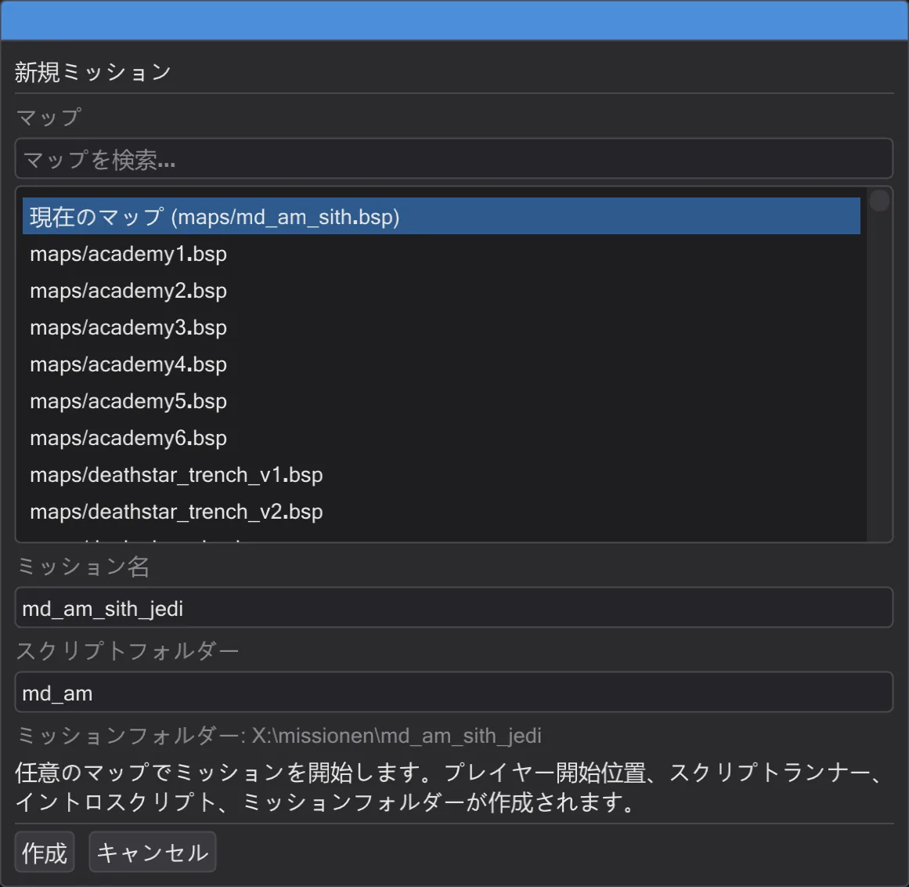
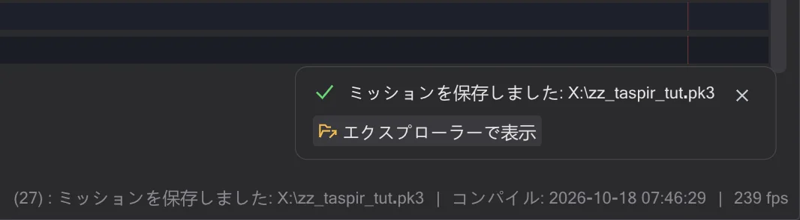
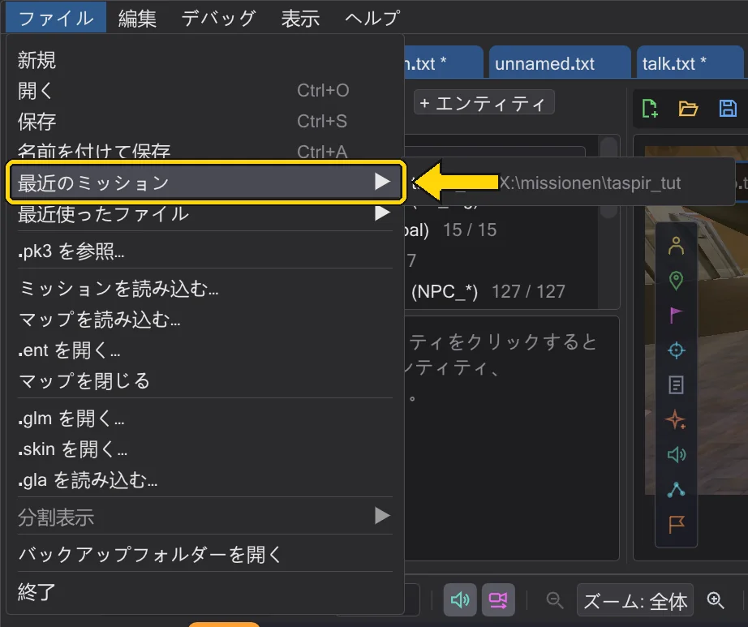

チュートリアル
自分のミッション
空のマップからゲームが読み込めるミッションまで。作成し、イントロを加え、チェックして .pk3 にまとめます。
手順#
- 1
ミッションを作る。 ミッション タブで 新規ミッション(またはスタート画面のカード)を押します。マップを選び、
md_test_jediなどの名前を入力して 作成 を押します。
新規ミッションのダイアログ。 - 2
作られたものを確認する。 プレイヤースタート、スクリプトランナー、イントロスクリプトが配置され、イントロはタブで開いています。ミッション名はマップのツールバーに表示されます。

作成直後のミッション。 - 3
イントロを書く。 カメラショット(はじめてのカットシーン)と歩くキャラクター(キャラクターを歩かせる)を加えます。すべてイントロスクリプトに入ります。
- 4
ミッションの保存を開く。 ミッションを保存 を押します。ダイアログにアーカイブへ入る全ファイルが表示され、ミッションがチェックされます。

保存前のチェック。 - 5
赤い項目を直して保存する。 エラー(エンティティが使うのに存在しないスクリプトなど)は直す必要があり、警告は残してもかまいません。保存 で
zz_md_test_jedi.pk3がゲームフォルダーに書き出されます。
保存完了。メッセージに保存先が表示されます。 - 6
遊ぶ。 ゲームを起動し、コンソールで
devmap md_test_jediと入力します。次回は ファイル → 最近のミッション でプロジェクト全体を開き直せます。
最近の一覧にあるミッション。